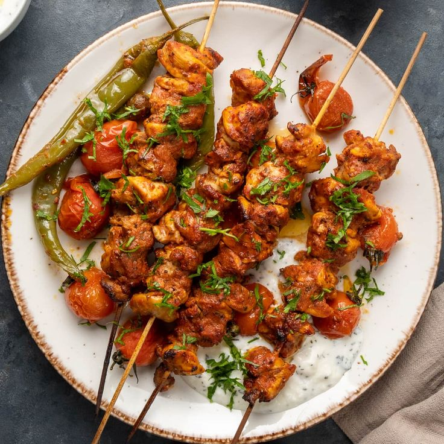

"Unveiling Flavors Through Time: The Epic Saga of Kebabs"
Kebabs, skewered and grilled meat dishes, have a diverse history tracing back thousands of years. Originating in the Middle East and Central Asia, they were a convenient way for nomadic tribes to cook meat over open fires. Over time, kebabs spread through the Silk Road, incorporating various spices and cooking techniques, from Turkish shish kebabs to Indian seekh kebabs. Today, kebabs are a global culinary favorite, celebrated for their flavorful and grilled perfection.
"Bringing Kebab to your kitchen"
Here's a basic recipe for making delicious and flavorful grilled kebabs. You can use your choice of meat, vegetables, or even tofu, and customize the seasonings to your preference. This recipe will make approximately 6-8 kebabs.
Elevate Your Dish with Exceptional Ingredients
For the Marinade:
- 1/4 cup plain yogurt
- 2 tablespoons olive oil
- 2 cloves garlic, minced
- 1 teaspoon ground cumin
- 1 teaspoon ground paprika
- 1/2 teaspoon ground coriander
- 1/2 teaspoon ground turmeric
- 1/2 teaspoon ground cayenne pepper (adjust to your spice preference)
- Salt and freshly ground black pepper to taste
- Juice of 1 lemon
For the Kebabs:
- 1.5 pounds (700 grams) of your choice of meat (chicken, beef, lamb, or tofu), cut into bite-sized pieces
- Assorted vegetables (bell peppers, onions, cherry tomatoes, zucchini, mushrooms, etc.), cut into bite-sized pieces
- Wooden skewers (soaked in water for 30 minutes to prevent burning)
Let's chop, simmer, and sauté our way to gastronomic glory!
Prepare the Marinade:
1. In a mixing bowl, combine the yogurt, olive oil, minced garlic, ground cumin, ground paprika, ground coriander, ground turmeric, ground cayenne pepper, salt, black pepper, and lemon juice. Mix well to create a smooth marinade.
Marinate the Meat or Tofu:
1. Place the meat, tofu, or your choice of protein in a separate bowl.
2. Pour the marinade over the protein and toss to coat evenly. Ensure each piece is well coated.
3. Cover the bowl with plastic wrap and refrigerate for at least 1-2 hours or overnight for the best flavor. The longer you marinate, the more flavorful the kebabs will be.
Assemble the Kebabs:
1. Preheat your grill to medium-high heat.
2. Thread the marinated meat or tofu and assorted vegetables onto the soaked wooden skewers, alternating between protein and vegetables.
Grill the Kebabs:
1. Place the kebabs on the preheated grill.
2. Grill for about 10-15 minutes, turning occasionally, or until the meat is cooked through and has grill marks, and the vegetables are tender and slightly charred.
3. Cooking times may vary depending on your choice of protein and the size of the pieces, so be sure to monitor closely.
Serve:
1. Once cooked, remove the kebabs from the grill.
2. Serve hot with your choice of side dishes, such as rice, pita bread, or a salad.
Enjoy your homemade kebabs with your favorite sauces or dips!